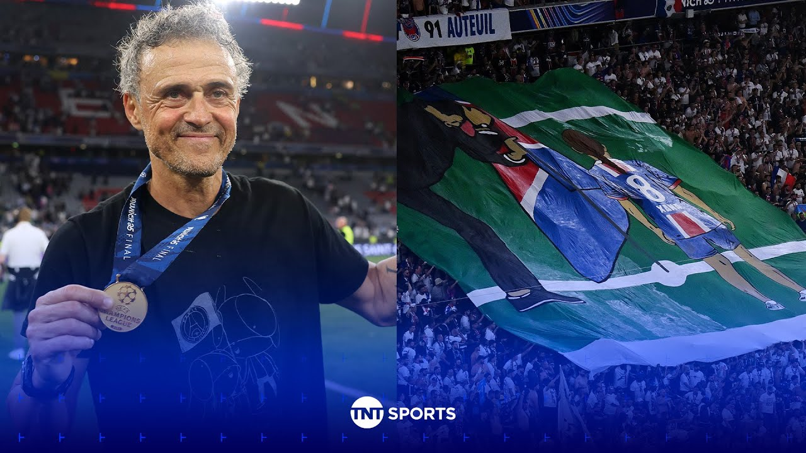

【路易斯·恩里克在#欧冠荣耀后穿着印有已故女儿Xana图案的特殊T恤❤️ #欧冠】
Summary: This is a touching moment for Luis Enrique as he honors his late daughter Xana after PSG's Champions League victory, showcasing a team of young, hungry players who dominated the final and promise a bright future under his leadership.
摘要： 这是路易斯·恩里克的感人时刻，他在巴黎圣日耳曼夺得欧冠后纪念已故女儿Xana，展现了一支年轻、充满渴望的球队在决赛中的统治力，并在他领导下拥有光明的未来。

⏱️ Estimated Reading Time: 10 min
[Music] And now this is worrying times for opposition teams around Europe because this team is young, hungry, and ready.
[音乐] 现在对欧洲各地的对手球队来说这是令人担忧的时刻，因为这支球队年轻、充满渴望并准备就绪。
Well, this is a lovely moment for Lewis Enrique as well.
对路易斯·恩里克来说这也是一个美好的时刻。
They must be thinking about his daughter Zanna right now as well.
他们现在一定也在想着他的女儿Xana。
You think about that iconic night Barcelona won and she planted the flag in the pitch and he's spoken about that this week and the emotions that he's going to be feeling and you can't even begin to wonder what's going through his mind right now every day.
你会想起巴塞罗那夺冠的那个标志性夜晚，她在球场上插上旗帜，他这周谈到了这一点以及他将感受到的情绪，你甚至无法想象他现在每天脑子里在想什么。
You can only imagine what's going through that man's mind and thoughts right now.
你只能想象这个男人现在的思绪。
clearly overriding joy and happiness for his team, for his fans, for his club, but also what he's been through and what his family's been through.
显然，他对球队、球迷和俱乐部的喜悦和幸福压倒一切，但也有他所经历的和他的家人所经历的。
Incredible moment.
不可思议的时刻。
Well, Paris is a city of culture, a city of elegance and style.
巴黎是一座文化之城，优雅与风格之城。
It's where the beautiful people go.
这是美丽的人们去的地方。
And tonight, PSG embody that city.
今晚，巴黎圣日耳曼体现了这座城市。
A stylish team full of flare, full of Parisian chic, and now a team that can be called Laura, the champions of Europe.
一支充满天赋、巴黎风情的时尚球队，现在是一支可以被称为欧洲冠军的球队。
The one they've been waiting for.
这是他们一直在等待的。
Darren, the heartbreak of 2020 far behind them now.
达伦，2020年的心碎现在已远远抛在身后。
Prisonians finally join Europe's elite, guided by that man, Lewis Enrique.
巴黎人终于在欧洲精英行列中占据一席之地，由路易斯·恩里克领导。
What a moment for him.
对他来说这是多么重要的时刻。
A treble for the man who completed the treble back in Barcelona in 2015.
对于这位2015年在巴塞罗那完成三冠王的人来说，又是一个三冠王。
You saw those incredible scenes a moment ago.
你刚才看到了那些不可思议的场景。
He said he wanted to get this this back.
他说他想把这个拿回来。
He said he wanted to plant it in the ground.
他说他想把它插在地上。
And he said he wanted to do it for his daughter Sah who passed away age nine four years after he did it with Barcelona.
他说他想为他的女儿Xana做这件事，她在巴塞罗那夺冠四年后去世，年仅九岁。
What an exceptional moment and what an exceptional manager as well for a team that before this even kicked off we said they're young guns.
多么特别的时刻，多么特别的教练，对于一支在比赛开始前我们还说他们是年轻枪手的球队。
They're inexperienced, but wow, they blew everyone out the water.
他们缺乏经验，但哇，他们让所有人都大吃一惊。
Owen, honestly, that was a master class in every phase in possession, out of possession, work, weight, effort.
欧文，说实话，那是在控球、无球、跑动、力量和努力各个方面的教学课。
The manager is the architect of this.
教练是这一切的缔造者。
The bluequin Stevie is absolutely remarkable.
蓝军史蒂维绝对出色。
That's one of the best final performances I've seen.
那是我见过的最好的决赛表现之一。
Yeah, I mean, I'm I'm still stunned.
是的，我是说我仍然震惊。
I feel like one of the Inter Milan players after watching that.
看完之后我感觉自己像国际米兰的球员之一。
I mean, the towel could have went in after 60 minutes.
我是说，60分钟后就可以认输了。
Um, you know, there was a huge golf in both teams.
嗯，你知道，两队之间有很大的差距。
uh to a man across the pitch.
呃，球场上的每个人。
Even the subs that come on, they contributed um just an an absolute wonderful performance, a spectacle, and um you know, as a young coach or young players watching that, that's the go-to game.
即使是替补上场的球员，他们也贡献了绝对精彩的表演，一场盛宴，嗯，你知道，对于观看的年轻教练或球员来说，那是必看的比赛。
All over the pitch, in in possession, out of possession, it was the perfect performance.
整个球场，控球或无球，那都是完美的表现。
Oh, and they got rid of the Galacticos and they created history.
哦，他们摆脱了银河战舰并创造了历史。
But you know what? In the end, football's a team game.
但你知道吗？归根结底，足球是团队运动。
You know, you there's only one ball, but you got to run around if you don't have the ball and you got to make runs for your teammates.
你知道，只有一个球，但如果你没有球，你必须跑动并为队友跑位。
The effort and sacrifice from this group of players from what it used to be to what it is now.
这群球员从过去到现在的努力和牺牲。
It is the transformation is remarkable.
这种转变是惊人的。
Credit Luis Enrique, credit the sporting director.
功劳归于路易斯·恩里克，归于体育总监。
The recruitment's been absolutely fantastic.
引援绝对出色。
No superstars now.
现在没有超级巨星。
They get these young French boys that are hungry.
他们得到了这些充满渴望的法国年轻人。
Desire do it 19 years old.
19岁的渴望去做到。
Ste and the bravery to back the manager.
史蒂维和支持教练的勇气。
I mean, how many times have we seen PSG, you know, change the coach because maybe Neymar's there or a Messi is there and Mbappy's there.
我是说，我们见过多少次巴黎圣日耳曼因为内马尔、梅西或姆巴佩的存在而换教练。
They've shown complete bravery from the top.
他们从高层展现了完全的勇气。
They've been involved.
他们参与其中。
They've recruited extremely well.
他们的引援非常出色。
Campos need these Herbs have medal just as much as the players.
坎波斯需要这些草药，就像球员们需要奖牌一样。
But listen, these are littered with superstars all over the pitch.
但听着，球场上到处都是超级巨星。
They've got four or five players that would walk into most teams in Europe waiting to come on, waiting to play, and they're all under 22 years of age.
他们有四五名球员可以轻松进入欧洲大多数球队的首发，等待上场，等待比赛，而且他们都不到22岁。
I mean, the future for this club is so bright, it's scary.
我是说，这家俱乐部的未来如此光明，令人害怕。
They've waited this long to get a European trophy, the big one, the Champions League.
他们等了这么久才拿到欧洲奖杯，最重要的欧冠。
And now they have a team that could go further into the future and pick up more trophies and more trophies going.
现在他们拥有一支可以在未来走得更远并赢得更多奖杯的球队。
Yeah, the guys mentioned in commentary, these guys are going to be the teams to beat for potentially a decade.
是的，评论中提到的这些人，他们可能是未来十年需要击败的球队。
You know, they're in their early 20s.
你知道，他们才20出头。
The only one who I think is Marinos, just 31.
唯一我认为是马里诺斯的，才31岁。
The rest of them are young, young, brilliant players, and they're going to get better.
其余的都是年轻、年轻、出色的球员，他们会变得更好。
They're going to Real made a really good point.
他们要去皇马提出了一个很好的观点。
It's going to be hard to get players to actually break into the starting 11 if they're going to recruit players.
如果他们要继续引援，球员要进入首发11人会很难。
Rio Ferdinand has been up in commentary watching what an exceptional performance that was for PSG.
里奥·费迪南德在评论中观看了巴黎圣日耳曼的这场非凡表现。
Rio, we thought that perhaps they could win, but not a demolition job like this.
里奥，我们以为他们可能会赢，但不是这样的碾压。
No, we I was I've always said I thought they would win.
不，我们我一直说我认为他们会赢。
When the lockout stages came, they looked like a team to beat for me.
当淘汰赛阶段到来时，他们看起来是一支需要击败的球队。
But to come into a final with such an experience at this level, had to perform with the confidence and the purity that we saw today, it's absolutely amazing.
但以这样的经验进入决赛，必须以我们今天看到的信心和纯粹表现，这绝对令人惊叹。
And I said upstairs, I think it's for a lot of the other teams.
我在楼上说过，我认为对其他很多球队来说。
They're going to have to go some to stay with this team because they're young, they're hungry, they're a vibrant team.
他们需要努力才能跟上这支球队，因为他们年轻、充满渴望、充满活力。
They're dynamic, and they've got a manager who's instilled now a mentality.
他们充满活力，而且有一位现在灌输了心态的教练。
And not only that, a confidence that it's hard to This is a train that could be hard to stop right now.
不仅如此，还有一种难以阻挡的信心，这是一列现在可能难以停止的火车。
their name now being etched on the Champions League trophy.
他们的名字现在刻在欧冠奖杯上。
It's hard to do it once, but Lewis Enrique has managed to do this twice now.
做到一次很难，但路易斯·恩里克现在已经做到了两次。
Yeah, we spoke about the game, you know, is he does he deserve to be mentioned in the same breath as your Ancelotties, your Jose Mourinhos, your Pep Guardios.
是的，我们谈到了比赛，你知道，他是否值得与安切洛蒂、何塞·穆里尼奥、佩普·瓜迪奥拉相提并论。
The answer is yes and in such an emphatic way as well.
答案是肯定的，而且是以如此有力的方式。
This team he's created what he's put together over the last what year or two.
这支球队是他过去一两年打造的。
This can beat you in any given way.
这支球队可以用任何方式击败你。
It can beat you with speed.
它可以用速度击败你。
It can beat you with quality.
它可以用质量击败你。
It can force you into a low block and have the variety to open low blocks up.
它可以迫使你低位防守并有多种方式破解低位防守。
It It's fantastic with set pieces.
它的定位球非常出色。
It's got so many game changers.
它有很多改变比赛的人。
I mean, the talents across this squad, I mean, it it's it's a special group of players.
我是说，这支球队中的天才，我是说，这是一群特别的球员。